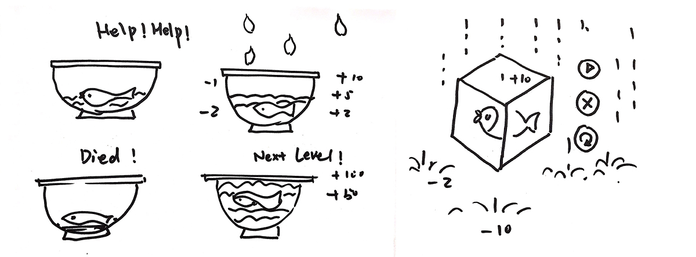

The concept of the Game "O!Fish" is combining of real and virtual world objects and interfaces and produce a game experience where the physical and digital co-exist and interact in real-time. Our idea is to prototype a game to engage users in accomplishing a specific task. In the game "Oh Fish!", the user will be holding a Holocube to simulate a fishbowl in the merged environment. The goal of the user will be to collect water droplets in the fishbowl to save the fish inside the bowl.
Going out of the way from traditional UX design for web and mobile, this project offered us more flexibility and freedom to introduce new methods for prototyping and testing for merged reality.
*Team Members: Shanglei Z., Rehab T., Kartik R., Yi Z. and Pruthviraj N.
Click to download the Project final report "O! Fish - A Merged Reality Game".
Click to downloadThis our small attempt to make use user-centered design process in mixed reality area. We believe that UX for merge reality must be approached differently but the core UX principles remain the same. The challenge for us in this project was to come up with different design heuristics for UX design of this product and evaluations.
We intend to make use of merged reality (VR + Real World) technology.
Design Concept and Functions
MergeVR headset with smartphone app to project virtual content onto the Holocube.
In this game, the user will be holding the cube, which is augmented as a bowl with a fish inside. The goal of the user will be to collect water by using the bowl to keep the fish alive. The water can be collected by moving the bowl to gather droplets falling from top. Every drop dripping from the top will have certain points based on the color and shape of the drops. The challenge for user will be to collect droplets with maximum points.
Initial sketches for fish-bowl game
Our brainstorming session was initiated with ideas that involved using a cube to simulate the virtual word object wearing a VR headset. We brainstormed around various ideas for coming up with situations where we could involve multiple users to use cube along with VR headsets to control objects in augmented world.
We explored two scenarios using storyboards.
These scenarios were gameplay for single player and gameplay for multiple players.
Storyboard 1 for single player game play
Storyboard 2 for showing multi-player game collaboration and game play
The final concept selected was to design the game for one player in the first round of development. Considering the timeframe, we have, we decided to conceptualize the idea for first round of iteration. For this we needed screens for allowing user flow. Below the requirements for sketching the user flow
We explored possible interactions for the Augmented VR screens making use of stickies and paper. We involved users at early stages of development by making them interact with paper mock-ups. There is no concrete tool available to build Lo-Fidelity prototypes for VRscreens. Hence, we selected paper mockups since it is cost-effective and cheap. We believe that making use of paper, sticky, color pens, and other sketching tools boosts creativity within the team and helps sharing of variant ideas within the team. We created a video with stickies and paper mock-ups to run through the game events.
Video: Team members changing the gameplay content using paper cut-outs.
Welcome screen - splash screen
Gameplay - collected droplets in the bowl
With our high-fidelity mockups, we proceeded to understand the orientation aspects of the cube and interaction in immersive space. We took a simple approach of projecting the virtual cube onto the holocube to achieve our hybrid sketches.
Hybrid sketch 1
Hybrid sketch 2
A final prototype was implemented using Unity. A fish bowl was augmented on the Holocube. The fish bowl could then be used to gather water droplets. The interactive prototype was created using unity. Please have a look at the video showing below.
Video: Virtual fish tank augmented over the holocube. Different interactable buttons and score board.
The team performed a cognitive walkthrough on paper prototypes and interactive prototype. Some of our key findings and recommendations are listed below.
The team conducted evaluations with 3 participants in their home setting. We evaluated the game interactions in merged reality environment. A usability test plan including the test script was created for evaluating the interactive prototype. We used our Unity prototype for the merged reality game evaluations and asked the Participants to perform the following tasks.
TASK 1: Please wear the Merge VR and hold this cube. Adjust the cube’s position to see the "O! Fish" welcome screen.
TASK 2: Starting the game.
TASK 3: Catching the good drops to save the fish. Catch healthy drops, unhealthy drops and bonus drops.
We used the think out loud method to gather insights. Users were asked to give their feedback on the game experience and a short interview was conducted to capture insights from users.
RESULTS: